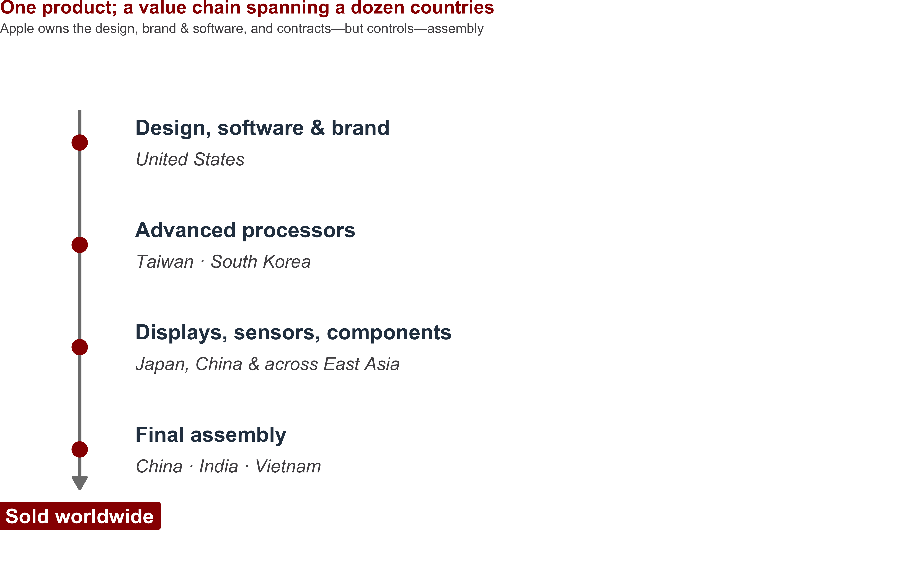
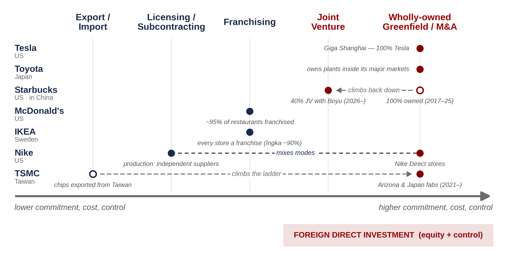
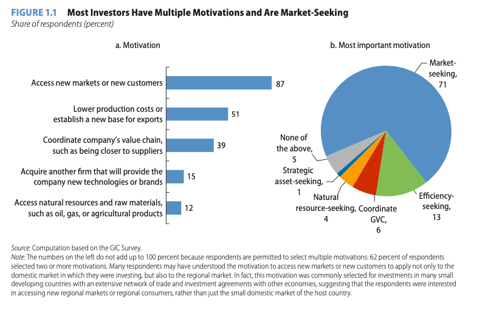
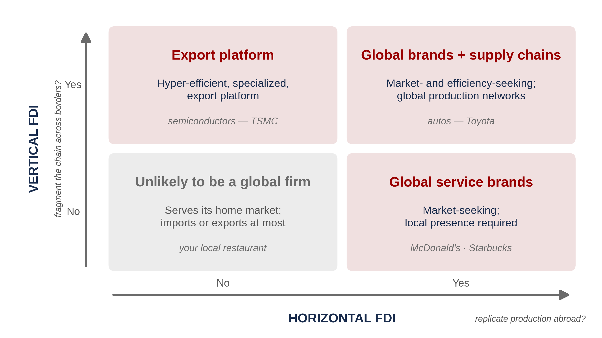
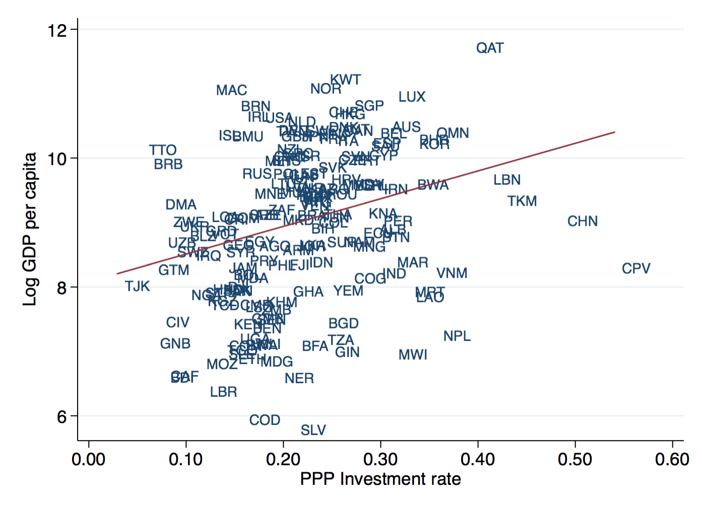
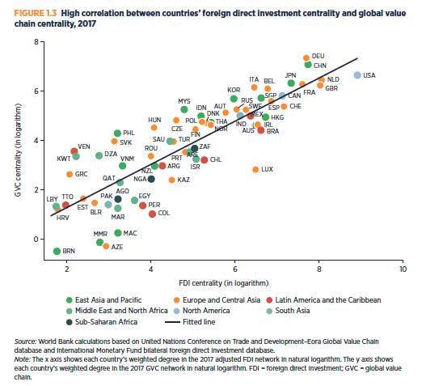
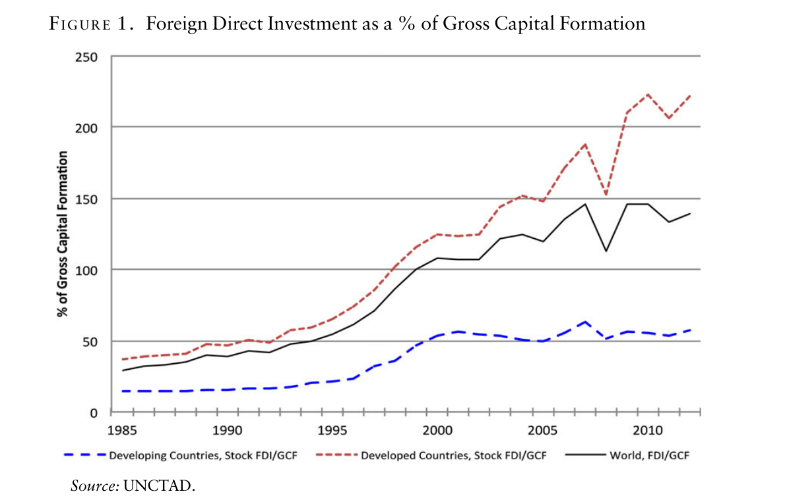
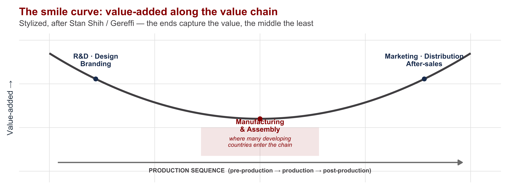

Global Business
INTL-I103 | Day 3 — Multinationals, Power & Why Countries Want FDI
August 31, 2026
Today’s Plan
Today’s Big Question
How and why do firms become multinational — and what are their effects on local communities?
| Section | What we’ll cover |
|---|---|
| Opening write · 5 min | What did you learn from Alfaro — and what questions do you have? |
| 1 · Why do firms become multinational? | The economist’s puzzle: when does owning beat contracting? |
| 2 · Why do governments want FDI? | Development requires capital — and what governments hope FDI provides |
| 3 · What does FDI do to host countries? | Under what conditions does FDI create growth, and who precisely benefits? |
| Closing discussion | How does the empirics of spillovers vs. reallocation relate to the three theories in Gilpin? |
Why do firms become multinational?
The puzzle of the multinational
Economics 101 says: if markets work, buy, don’t build — contract for what you need
Yet some firms own and operate production in other countries, at great cost
The puzzle (theory of the firm): what makes internalizing an activity cheaper than contracting for it?

The ladder of going global

Each rung trades more commitment and cost for more control. Crossing into the equity rungs — taking an ownership stake — is what makes investment direct.
Same ladder, different firms

The mode is a choice — and firms mix and switch as conditions change.
Definitions
| Term | What it means |
|---|---|
| Foreign portfolio investment | Cross-border purchase of stocks or bonds purely for a financial return, with no intent to control. |
| Multinational enterprise (MNE) | A firm that owns and controls production facilities or other income-generating assets in at least two countries. You’ll also see MNC and TNC — same class of entities, slightly different terminology. |
| Foreign direct investment (FDI) | Cross-border investment that gives a lasting interest and a measure of control — by convention, a stake of 10% or more in a foreign enterprise. |
| Parent & affiliate | The home-country parent owns the foreign affiliate — the umbrella term for any foreign operation in which the parent holds a lasting stake. FDI is the financial flow that builds and sustains that relationship. |
| Subsidiary | An affiliate the parent majority-owns (>50%) — legally a separate company, but under the parent’s control. |
| Home Country | The “nationality,” primary place of business, headquarters, or place of origination of the MNE. How to define home country is contested. |
| Host Country | The country receiving the investment. |
Why produce abroad? Ask the firms

Source: World Bank, Global Investment Competitiveness survey
Resource-seeking
Market-seeking
Efficiency-seeking
Export platforming
Strategic asset-seeking
Why own it rather than contract for it?
Foreignness is a cost — unfamiliar consumers, politics, institutions, language. Ownership must earn back that liability of foreignness. It does when (Dunning’s OLI):
- Ownership — a firm-specific asset you can’t safely share (technology, brand, know-how)
- Location — production belongs there (costs, resources, market access, tariff-jumping)
- Internalization — contracting isn’t viable: transaction costs, weak IP protection, quality control
No O or I friction? Stay on the low rungs — license, franchise, subcontract (Nike’s factories). Strong O + I? Own it (Tesla, TSMC’s fabs).
Two directions, four kinds of firms
Horizontal FDI — replicate production abroad to serve that market.
Vertical FDI — fragment the value chain across borders, each stage where it’s cheapest.

Why do governments want FDI?
Development requires capital — and capital is scarce where it’s most needed
Growth models agree on the core: productivity growth requires investment (Solow)
Poor economies are savings-constrained: domestic saving can’t finance the investment they need (Harrod–Domar)
Foreign capital can fill the gap — one reason governments court it

Source:
What governments hope FDI brings
FDI ≠ just money. It arrives bundled with:
- Technology & know-how embodied in the firm
- Jobs — created definitionally
- Supplier linkages to local firms
- Position in global value chains — which compounds →

Source: World Bank, World Development Report 2020
Governments acted on that hope
Since the 1980s: liberalization, privatization, and active FDI attraction — barriers cut, incentives paid (Alfaro 2016)
FDI is now a large multiple of what domestic investment alone could finance in much of the world
Does it deliver? Not automatically — Section 3.

Source: Alfaro 2016, Figure 1 (UNCTAD data)
What does FDI do to host countries?
We take up effects on home countries later in the semester.
Three theoretical expectations about FDI’s effect on hosts
| Lens (Gilpin 1976) | Expectations |
|---|---|
| Liberalism | Mutual gains — FDI transfers capital, technology, and jobs; hosts and firms both win |
| Mercantilism / economic nationalism | Dependence — the MNC extends home-state power; hosts cede control over their own economies |
| Marxism | Extraction — profits and high-value activities concentrate in the core; hosts supply labor and materials |
The critiques have history behind them:
the earliest FDI was structured along colonial ties and was largely in extractive sectors (e.g. mining)
so decolonization brought expropriations meant to push out former colonizers and build local economic elites.
Where Value is Located in Supply Chains

Hosts often enter the chain where value-added is lowest — and may stay there.
What the record shows: gains are conditional
Macro studies find no automatic growth effect of FDI on its own (Alfaro 2016)
Gains require absorptive capacity — the host’s ability to capture what the foreign firm brings:
- Human capital above a minimum threshold (Borensztein et al. 1998)
- Developed local financial markets — so local firms can borrow to become suppliers (Alfaro et al. 2004)
Most of the poorest countries fall below these thresholds (Xu 2000) — the countries that need FDI most are the least positioned to benefit from it
Who wins? Depends on why productivity rises
| Mechanism | What’s happening | Is local capacity being built? |
|---|---|---|
| Spillover | Knowledge leaks from foreign to domestic firms | Yes — local firms improve |
| Selection | Least productive local firms exit | Mixed — survivors stronger, firms die |
| Reallocation | Resources shift from local firms to the MNE | No — averages rise while local firms shrink |
All three raise measured productivity — the data show spillover and reallocation at work (Alfaro & Chen 2013). Which one dominates decides whether MNEs build local capacity or displace it — and whether subsidizing foreign firms is defensible policy. Hold this for the closing discussion.
What we found today
Multinationals exist where owning beats contracting (OLI) — firms mix and switch along the ladder depending on their needs
Governments want to attract FDI because development requires capital and technology that poor, savings-constrained economies lack
The record: FDI can increase economic growth conditional on absorptive capacity — and which mechanism raises productivity is important to understanding whether local actors gain from FDI
Gilpin’s three lenses hold different expectations on all of the above
Wednesday: in-class worksheet on Alfaro, Gilpin & Ruggie — finish Ruggie (power, authority, autonomy). Next week: Ireland — a state that bet everything on FDI.
Questions?
Closing discussion: spillovers vs. reallocation — what would each of Gilpin’s three lenses predict?

INTL-I103 | Global Business